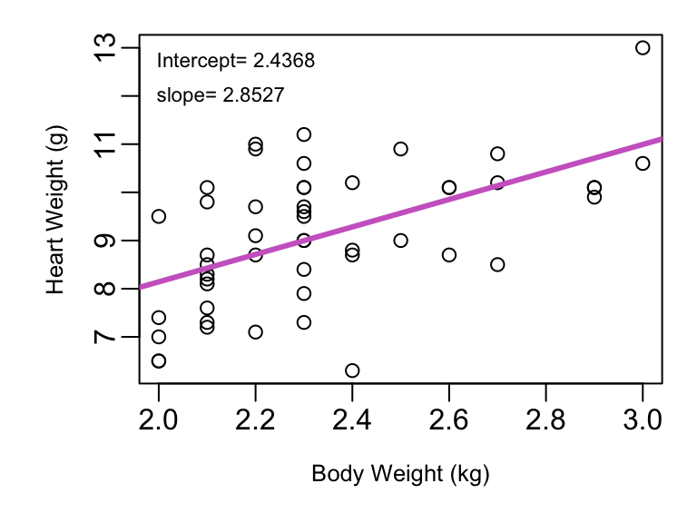
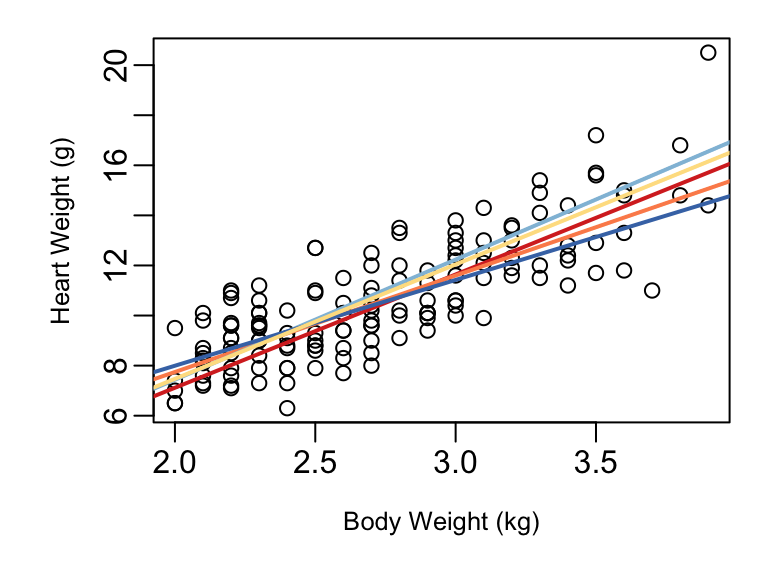

Every confidence interval you learned in intro statistics has the same basic format:\[
point\: estimate \pm multiplier\times standard \: error
\] Similarly, the hypothesis tests you’ve learned for means and proportions have test statistics in the general format of:
\[
\frac{observed \: value - hypothesized\: value}{standard\: error}
\]
Both of these basic structures will continue in the realm of regression analysis.
3.1 Inference for Model Coefficients
You can now fit a regression model, but in many ways that’s equivalent to being able to calculate a sample mean. The least-squares fit gives you a way to describe your sample data well, but the line alone doesn’t tell you all you need to make statements about the population your sample came from. Just as you learned how to put a confidence interval on a sample mean in intro stat, you’ll now put confidence intervals on your fitted model coefficients. Confidence intervals allow you to quantify how much uncertainty surrounds the estimates of the intercept \((β_0)\) and slope \((β_1)\) coefficients.
Consider the cats data frame available in the MASS library for R. This data frame includes the body weight (in kg) and heart weight (in grams) for 144 cats. The least-squares fit for the first 50 cats in Figure 3.1.
But what if a different sample of 50 cats had been selected? How different might the \(\hat{β_0}\) and \(\hat{β_1}\) be? Figure 3.1 (b) shows five different regression lines fit on five different samples of size 50 from the cat data superimposed on a scatterplot of all 144 cats in the data frame.

(a) Fit of first 50 cats

(b) 5 fits from 5 samples of 50
Figure 3.1: Cat Body and Heart Weight
As you see, each sample produces a slightly different line. The five intercepts range from -2.164 up to 1.141, and the five slopes range from 3.4268 up to 4.8005. Clearly which random sample you look at matters, and when this variability exists we need a confidence intervals to communicate this uncertainty, and hypothesis testing is needed to evaluate hypotheses.
3.1.1 Confidence Intervals
Intercept\(β_0\)
The point estimate for the intercept in your linear model describing the relationship between X and Y is simply your \(\hat{β_0}\).
The multiplier used in your confidence interval will come from a t-distribution with \(n-2\) degrees of freedom. Why \(n-2\)? You started with n data points (and n degrees of freedom), and then you lose one degree of freedom for each parameter you estimate. You estimated two parameters: \(β_0\) and \(β_1\), hence \(n-2\).
The standard error for \(\hat{β_0}\) is \(SE_{\hat{β_0}}=S_R\sqrt{\frac{1}{n}+\frac{\bar{x}^2}{\sum(x-\bar{x})^2}}\) where \(S_R=\sqrt\frac{\sum(y_i-\hat{y_i})^2}{n-2}\), the standard deviation of the residuals.
Example with cat heart weight model from Figure 3.1 (a)
Point estimate is simply \(\hat{β_0}=2.4368\).
With \(n=50\) there are \(50-2=48\) degrees of freedom, so for a 95% confidence interval the multiplier will be \(t_{.025, 48}=2.010635\).
Using the components \(\bar{x}=2.34\), \(\sum(x-\bar{x})^2=3.76\), and \(S_R=1.2007\), we can calculate \(SE_{\hat{β_0}}=1.2007 \sqrt{\frac{1}{50}+\frac{2.34^2}{3.76}}=1.4588\).
With this, we are 95% confident that the interval going from \(-0.4963\) to \(5.3699\) captures the intercept for the linear model describing heart weight as a function of body weight in the full population of cats.
Slope\(β_1\)
The point estimate for the intercept in your linear model describing the relationship between X and Y is simply your \(\hat{β_0}\).
The multiplier used in your confidence interval will come from a t-distribution with \(n-2\) degrees of freedom. Why \(n-2\)? You started with n data points (and n degrees of freedom), and then you lose one degree of freedom for each parameter you estimate. You estimated two parameters: \(β_0\) and \(β_1\), hence \(n-2\).
The standard error for \(\hat{β_1}\) is \(SE_{\hat{β_1}}=\frac{S_R}{\sqrt{\sum(x-\bar{x})^2}}\) with \(S_R\) the same as before.
Example with cat heart weight model from Figure 3.1 (a)
Point estimate is simply \(\hat{β_1}=2.8527\).
With \(n=50\) there are \(50-2=48\) degrees of freedom, so for a 95% confidence interval the multiplier will be \(t_{.025, 48}=2.010635\).
Using the components \(\sum(x-\bar{x})^2=3.76\), and \(S_R=1.2007\), we can calculate \(SE_{\hat{β_1}}=\frac{1.2007}{\sqrt{3.76}}=0.6192\)
With this, we are 95% confident that the interval going from \(1.6077\) to \(4.0977\) captures the slope for the linear model describing heart weight as a function of body weight in the full population of cats.
3.1.2 Hypothesis tests
Hypothesis tests for regression coefficients most often test the null hypothesis that \(β_0=0\) or that \(β_1=0\), but there is nothing stopping you from testing any value of interest for \(β_0\) or \(β_1\).
Intercept\(β_0\)
To test \(H_0:β_0=b_0\) the test statistic is \(t=\frac{\hat{β_0}-b_0}{SE_{β_0}}\) with \(SE_{\hat{β_0}}\) as defined earlier. The test statistic follows a t distribution with \(n-2\) degrees of freedom.
Example with cat heart weight model from Figure 3.1 (a):
\(H_0:β_0=0\) corresponding to testing if the line passes through the origin.
Test statistic \(t=\frac{\hat{β_0}-0}{SE_{β_0}}=\frac{2.4368-0}{1.4588}=1.670\).
Being a two-tailed test, the p-value is the area under the \(t_{df=48}\) distribution curve to the right of 1.670 and to the left of -1.670. This comes out to \(p=0.1014\), indicating there is not evidence the intercept differs from 0.
Slope\(β_1\)
As with intercept, to test \(H_1:β_1=b_1\) the test statistic is \(t=\frac{\hat{β_1}-b_1}{SE_{β_1}}\) with \(SE_{\hat{β_1}}\) as defined earlier and the test statistic follows a t distribution with \(n-2\) degrees of freedom.
Example with cat heart weight model from Figure 3.1 (a):
\(H_0:β_1=0\) corresponding to testing if the line is horizontal meaning knowing a cat’s body weight gives no meaningful insight into it’s heart weight.
Test statistic \(t=\frac{\hat{β_1}-0}{SE_{β_1}}=\frac{2.8527-0}{0.6192}=4.607\).
Being a two-tailed test, the p-value is the area under the \(t_{df=48}\) distribution curve to the right of 4.607 and to the left of -4.607. This comes out to \(p<0.0001\), indicating there is strong evidence the slope differs from 0.
In R
Confidence Intervals
There are a couple ways you can get your confidence intervals using R. Option one is to use the summary command to get the various elements you need for the intervals:
Call:
lm(formula = Hwt ~ Bwt, data = cats[1:50, ])
Residuals:
Min 1Q Median 3Q Max
-2.98316 -0.79264 -0.00526 0.86316 2.28737
Coefficients:
Estimate Std. Error t value Pr(>|t|)
(Intercept) 2.4368 1.4588 1.670 0.101
Bwt 2.8527 0.6192 4.607 3.03e-05 ***
---
Signif. codes: 0 '***' 0.001 '**' 0.01 '*' 0.05 '.' 0.1 ' ' 1
Residual standard error: 1.201 on 48 degrees of freedom
Multiple R-squared: 0.3066, Adjusted R-squared: 0.2922
F-statistic: 21.23 on 1 and 48 DF, p-value: 3.029e-05
There is lots of great information in this summary output. It begins with the Call section that shows you the function call you made that created the model object in the first place. Next is the Residuals section that gives you the five number summary for the model residuals providing a snapshot of the model errors. The Coefficients section has the output you care about most. This table gives you the \(\hat{β_0}\) and \(\hat{β_1}\) estimates along with their standard errors. Highlighted below as an example is the detail for the intercept. The estimate for \(\hat{β_0}\) of \(2.4368\) is in the Estimate column, and the standard error of \(\hat{β_0}\) , \(1.4588\) appears along side it in the Std. Error column.
Getting your t multiplier then is as simple as using the qt function:
qt(.025, df=48)
[1] -2.010635
Also helpful: the “Residual standard error” given in the summary output below the Coefficients table is the \(S_R\) used in the standard error formulas.
If you want to have R do even more of the work for you, there’s the confint function. This provides you confidence intervals on both the intercept and slope as easily as:
The summary of your regression model Coefficients table not only gives the point estimate and standard error, but also the test statistic and p-value for the test of whether \(β_i=0\). Below is the cat model summary table highlighted to show the details for the test of \(β_1=0\).
The third column gives the t test statistic, \(4.607\), and the fourth column provides the p-value for the test. To the right of the p-value column R provides a code indicating the outcome of test. If the p-value is below 0.001 as is the case with slope here, three astrisk marks are shown. A p-value between 0.01 and 0.001 gets two asterisks, between 0.01 and 0.05, a single asterisk, a single “.” appears if the p-value is between 0.05 and 0.1, and the area is blank if the p-value is greater than 0.1. This is why no symbol is seen in the first row corresponding to the intercept.
On Your Own
Consider the bac data frame from the openintro library. Fit a regression model predicting blood alcohol content as a linear function of beer consumption.
Interpret your model.
Complete and interpret a 95% confidence interval for the intercept.
Complete and interpret a 95% confidence interval for the slope. What does the intercept mean in the context of this data?
Is there significant evidence at the \(α=0.05\) level that the intercept is different from zero?
Is there significant evidence at the \(α=0.05\) level that the slope is greater than 0.015?
Consider the mtcars data frame from the datasets library. Fit a linear regression model predicting mpg as a function of vehicle weight in 1,000s of lbs.
Interpret your model.
Complete and interpret a 95% confidence interval for the intercept. What would the intercept mean in this context?
Complete and interpret a 95% confidence interval for the slope.
Is there significant evidence at the \(α=0.05\) level that a car’s fuel efficiency drops by an average of more than 5 mpg for every extra 1,000 lbs weight?
Consider the record race times for Scottish hill races provided in the hills data in the MASS library. Fit a linear model predicting the record race time in minutes as a function of the race distance length in miles.
Interpret your model.
What does the intercept mean in this context? Complete and interpret a 90% confidence interval for intercept.
Complete and interpret a 90% confidence interval for the slope.
Is there significant evidence at the \(α=0.01\) level that an additional mile of race distances increases the record winning time by more than 7 minutes?
Consider our cats heart and body weight data from the MASS library.
Fit a model predicting cat heart weight as a function of body weight using only the Male cats. Interpret your result.
Fit a model predicting cat heart weight as a function of body weight using only the Female cats. Interpret your result.
Complete 90% confidence intervals for the slopes of each model. Discuss your results. Is there evidence the relationship between heart weight and body weight varies by cat sex?
3.2 Confidence Intervals for \(\bar{Y}|X\)
In addition to confidence intervals for regression coefficients, you can also create confidence intervals for the mean Y at a given value of X. The point estimate that serves as the center of your confidence interval is simply the predicted value of Y given X based on your model fit and the multiplier is again a t distribution multiplier with \(n-2\) degrees of freedom.
The standard error of \(\bar{Y}\) when \(X=x_*\) is
The \(S_R\) is the same one seen in section 3.1 and reflects the variability of residual error observed with the model fit. The \((x_*-\bar{x})^2\) component is entirely new though. If you look back at Figure 2, you’ll see the five lines are closest together near the center of our collection of X values. On the outer edges, the lines are farther apart. This means we are much more confident in our prediction of Y given X in the middle of the X range than we are on the edges of the observed X range. That is what the \((x_*-\bar{x})^2\) component is capturing because \(x_*\) is the value of X for which you are predicting Y. When \(x_*\) is close to \(\bar{x}\), this term will quite small and only the \(\frac{1}{n}\) in the square-root will really matter. When \(x_*\) is far from \(\bar{x}\), this term will be large and the full \(SE_{(\bar{Y}|X)}\) will increase.
So using our cat body and heart weight data model on the first 50 cats, if we are interested in the mean heart weight of cats with a body weight of 2.3 lbs, the steps to complete a 98% confidence interval would look like:
Because 2.9 lbs is farther from the mean X of 2.34, the \(SE_{\bar{Y}|X=2.9}>SE_{\bar{Y}|X=2.3}\) resulting in a wider interval.
In R
Confidence intervals for \(\bar{Y}|X=x_*\) are available through the same predict.lm function seen in Chapter 2 for calculating predicted values with your model. The usage begins the same as with finding predicted values: you input your fitted model object and then a data frame with the \(x_*\) values of interest. All that’s needed beyond that is specifying interval="confidence". By default the confidence level is .95, but any value can be specified with a level= input as shown in the example below.
These result match what was found in the step-by-step calculations above.
On Your Own
Consider the bac data frame from the openintro library.
Fit and interpret a regression model predicting blood alcohol content as a linear function of beer consumption.
What do you estimate for the mean blood alcohol level when 1, 3, 5, or 7 beers are consumed?
What is the t-multiplier you would use for a 98% confidence interval for the mean blood alcohol level after 1 beer?
Would a 95% confidence interval for the mean blood alcohol level after 1 beer be wider, narrower, or the same width as a 98% confidence interval for blood alcohol after 4 beers? Explain.
Complete 98% confidence intervals for the mean blood alcohol levels after 1, 3, 5, and 7 cans of beer. Write out an interpretation for the 3-beer interval.
Consider the mtcars data frame from the datasets library.
Fit and interpret a linear regression model predicting mpg as a function of vehicle weight in 1,000s of lbs.
Complete and interpret a 95% confidence interval for the mean mpg of cars weight 2,000 lbs, 2,500 lbs, 3,000 lbs, and 3,500 lbs.
How wide are each of your intervals from part b? Why is the 2,000 lb interval so much wider than the 3,000 lb interval? Explain.
Complete and interpret a 98% confidence interval for the mean mpg of cars weight 3,000 lbs. How does this interval compare to the 3,000 lb interval from part b.
Consider the speed and stopping distance data in the cars data frame.
Fit and interpret a linear regression model predicting stopping distance as a function of speed.
Complete and interpret 90% confidence intervals for the mean stopping distance of cars traveling at 20 and 40 miles per hour.
How wide are each of your intervals from part b? Are you equally confident in each of them? Why or why not?
3.3 Prediction Intervals for \(Y\)
There is a new type of interval in regression modeling that is a little different than those you’ve learned up until now. Your intro stats class likely considered confidence intervals for a mean, a proportion, the difference between two means, or the difference between two proportions. In section 3.1 we looked at confidence intervals for intercept and slope for our regression fit. Section 3.2 was confidence intervals for the mean \(Y\) at a given \(X=x_*\). What all of these have in common is that the interval is all about the estimate of an unknown population parameter.
There exists a true population mean, and you’re using your sample data to create an interval likely to capture that population parameter because measuring the entire population to calculate it directly is not feasible. Just as there exists a true slope for the relationship between X and Y for the entire population - you can’t measure the full population so you use your sample to develop an interval likely to include the population slope parameter.
This new type of interval, a prediction interval, isn’t about estimating an unknown population parameter. The goal with a prediction interval is to predict the next Y observation at a set \(X=x_*\). As such, prediction intervals are quite a bit wider than the corresponding confidence interval at \(X=x∗\) because single observations have quite a bit more variability than means. How much more variability? Well… look back at Figure 1. What measure do we have that describes the variability of individual points around the fitted regression line? The \(S_R\) term. That’s why while the standard error of \(\bar{Y}\) at a given X looks like this:
The two are nearly identical, but with the addition of a simple \(1+\) we’ve added in the \(S_R\) one more time to account for the variability of individual points.
The general form of your prediction interval is exactly as with the confidence interval: \[
point\space estimate \pm multiplier\times standard \space error
\]
so if we want a 90% prediction interval for the heart weight of a cat with a body weight of 2.3, that is achieved through
Note that little \(1+\) addition has a big impact. Even though this is a 90% level interval, it is much much wider than the 98% confidence interval calculated in section 3.2 for the same \(X=2.3\). That’s because while that one was about \(\bar{Y}\) at \(X=2.3\), this is about a single observation. So we can now say we are 90% confident the interval ranging from 6.9636 to 11.0322 grams includes the heart weight of Fluffy, a cat with a body weight of 2.3lbs.
In R
For prediction intervals you’re using the predict.lm function again only now specifying interval="prediction".
Consider the bac data frame from the openintro library.
Fit and interpret a regression model blood alcohol content as a linear function of the number of cans of beer consumed.
What do you estimate for the blood alcohol content when 2, 4, 6, or 8 beers are consumed?
What is the t-multiplier you would use for a 90% prediction interval for blood alcohol when 4 beers are consumed?
Complete 90% confidence intervals for blood alcohol level with 2, 4, 6, or 8 beers are consumed. Write out an interpretation for the 4-beer interval.
Would a 98% confidence interval for blood alcohol content when 2 beers are consumed be wider, narrower, or the same width as a 98% confidence interval for when 4 beers are consumed? Explain.
Consider the mtcars data frame from the datasets library.
Fit and interpret a linear regression model predicting mpg as a function of vehicle weight in 1,000s of lbs.
Complete and interpret a 95% prediction interval for the mpg of three new cars coming out soon with weights of 2,200 lbs, 2,700 lbs, and 3,300 lbs.
How wide are each of your intervals from part b? Why is the 2,200 lb interval so much wider than the 3,300 lb interval? Explain.
Complete and interpret a 95% confidence interval for the mean mpg of cars weighing 3,300 lbs. How does this interval compare to the 3,300 lb interval from part b? Explain the difference.
Consider the speed and stopping distance data in the cars data frame.
Fit and interpret a linear regression model predicting stopping distance as a function of speed.
Complete and interpret 90% prediction intervals for the stopping distance of cars traveling at 15, 25, 35, and 45 miles per hour.
How wide are each of your intervals from part b? How would the width of an interval for a car traveling at 10mph compare to the widths seen in b?
Are you equally confident in each of your intervals from part b? Why or why not?